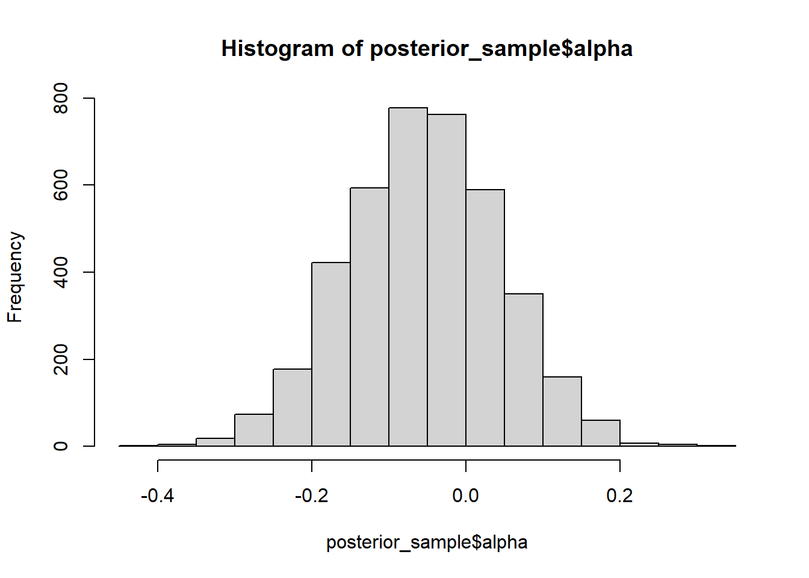
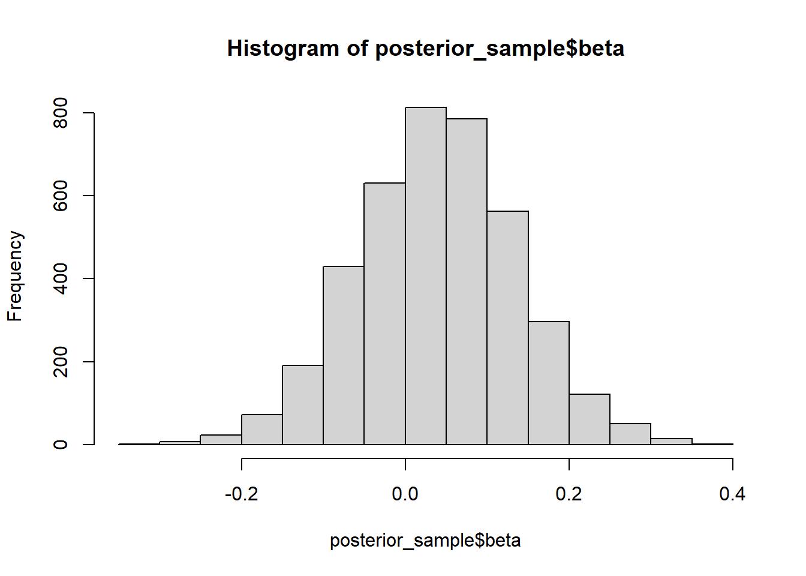
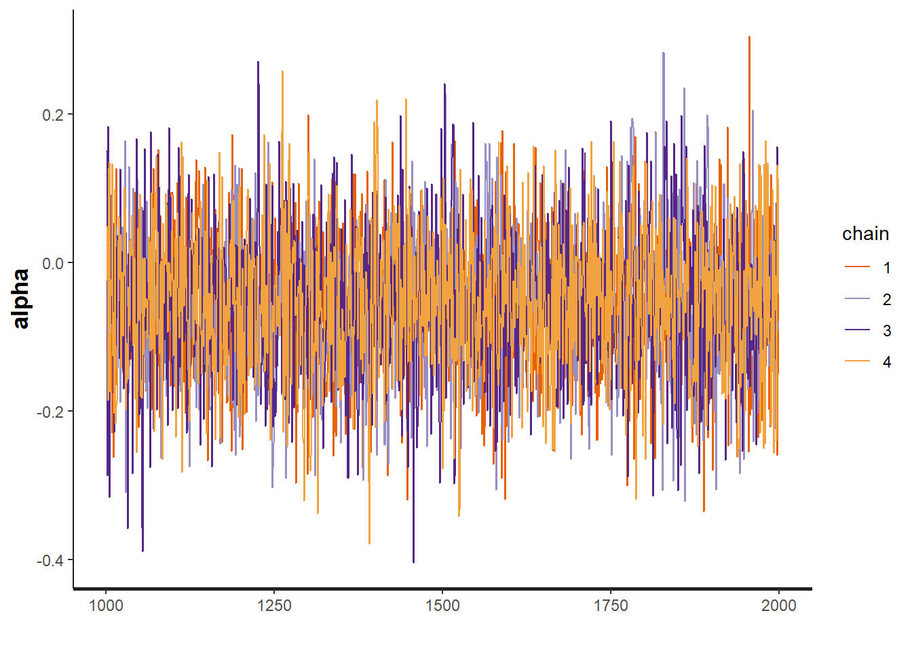
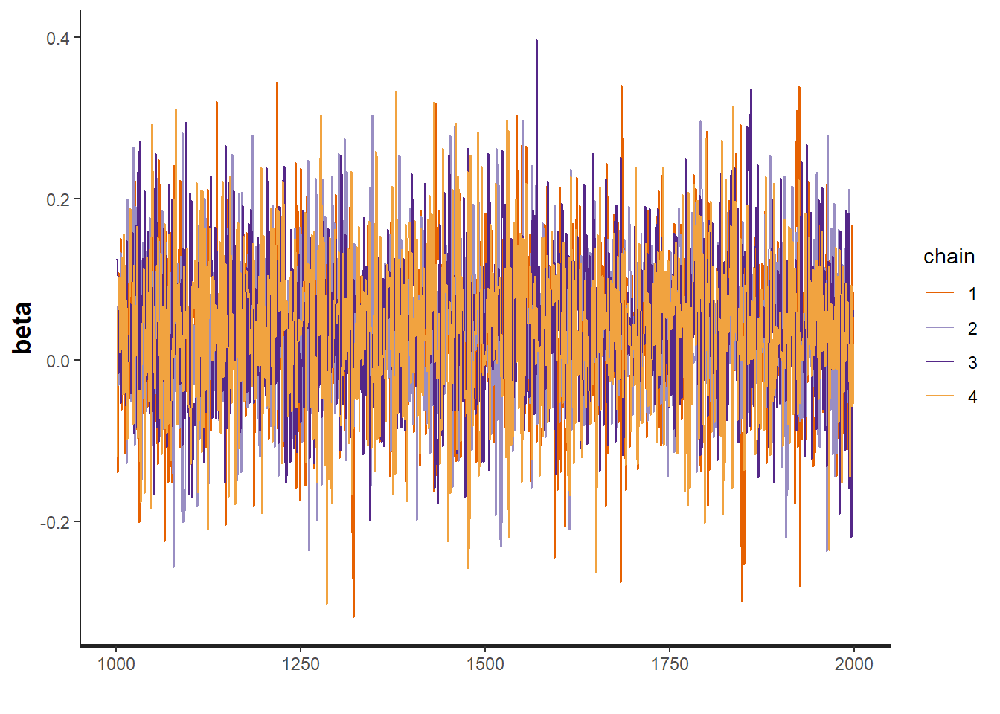
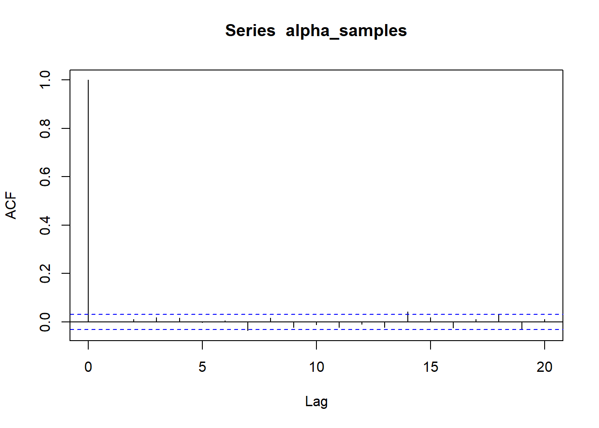
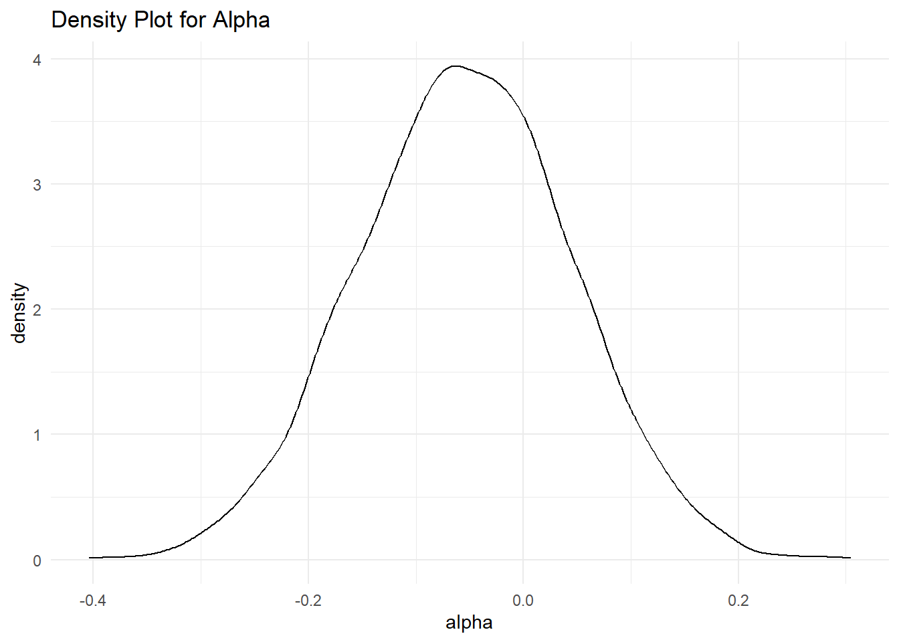
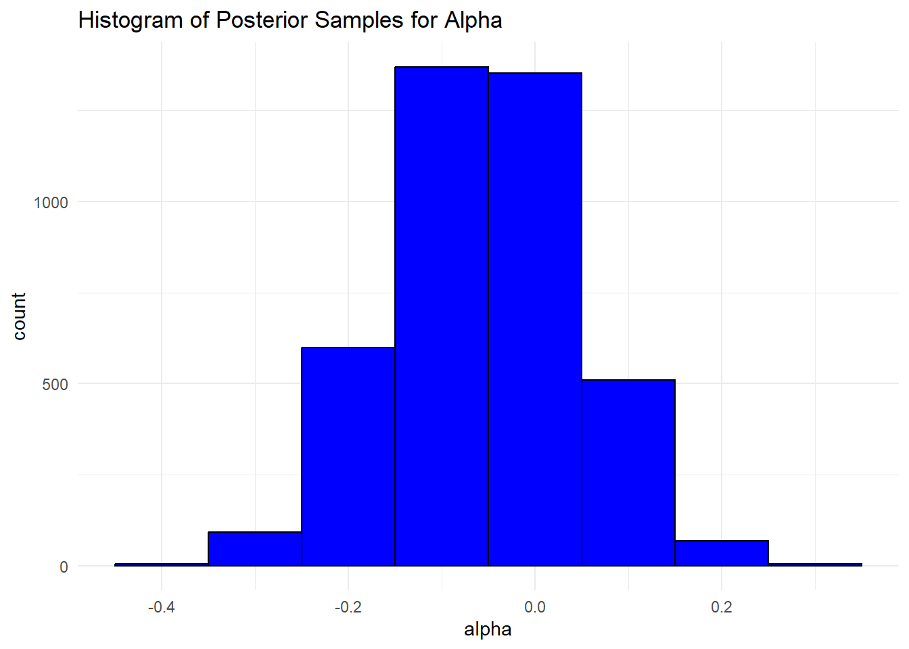
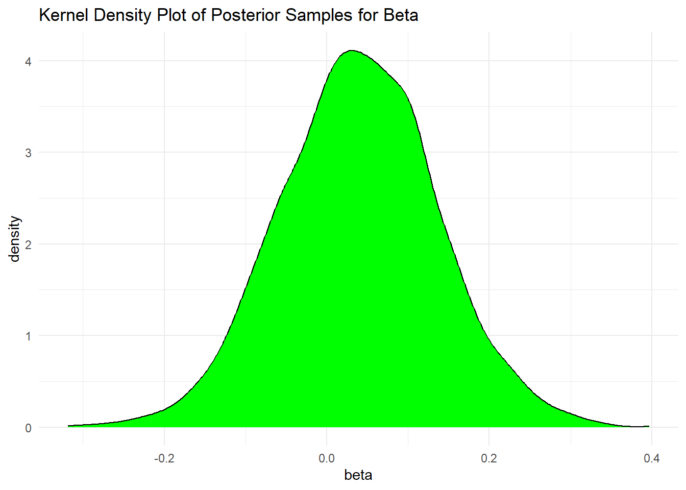

# https://blog.mc-stan.org/2022/04/26/stan-r-4-2-on-windows/
# install.packages("rstan")
# Remove currently installed rstan andd StanHeaders packages
# If you have not installed these packages yet, proceed to step 2.
# remove.packages(c("rstan", "StanHeaders"))
# Install from the Stan R package repository
# install.packages("rstan", repos = c("https://mc-stan.org/r-packages/", getOption("repos")))Intro to Bayesian inference
Introduction to Bayesian Inference with R
In this introduction, we will explore Bayesian inference in R. Bayesian inference is a method of statistical inference in which Bayes’ theorem is used to update the probability for a hypothesis as more evidence or information becomes available. This method allows us to incorporate prior knowledge into our analysis and make more informed decisions.
We will begin by discussing the basics of Bayesian inference and Bayes’ theorem. Next, we will learn about the various types of prior distributions that can be used in Bayesian analysis. Finally, we will walk through several examples of Bayesian inference in R using the rstan package for Bayesian modeling.
Before diving in, it is important to note that some understanding of probability and statistics is recommended for following along with this text. Additionally, the rstan package requires the Rtools to be installed on your system.
Let’s get started!
Bayes’ Theorem
Bayes’ theorem is the foundation of Bayesian inference. It states that the probability of a hypothesis (H) given some data (D) is proportional to the probability of the data given the hypothesis (D|H) multiplied by the prior probability of the hypothesis (H).
Mathematically, it can be represented as:
\[P(H|D) = \frac{P(D|H) * P(H)}{P(D)}\]
Where:
\(P(H|D)\) is the posterior probability of the hypothesis given the data. \(P(D|H)\) is the likelihood of the data given the hypothesis. \(P(H)\) is the prior probability of the hypothesis. \(P(D)\) is the marginal likelihood, also known as the evidence. The posterior probability, \(P(H|D)\), represents our updated belief about the hypothesis after taking into account the data. The prior probability, \(P(H)\), represents our initial belief about the hypothesis before taking into account the data. The likelihood, \(P(D|H)\), represents how likely the data is given the hypothesis. The marginal likelihood, \(P(D)\), is a normalizing constant that ensures the posterior probability is a valid probability distribution.
In Bayesian inference, we use Bayes’ theorem to update our belief about a hypothesis by incorporating new data. The process of updating our belief is known as updating the prior to the posterior.
Prior Distribution
In Bayesian inference, prior distribution is used to express our initial belief about the parameters of the model before observing the data. Prior distributions can be chosen based on previous knowledge, expert opinion, or other sources of information.
There are different types of prior distributions that can be used in Bayesian analysis, including:
Non-informative prior: A non-informative prior is a prior distribution that has minimal information about the parameters of the model. Examples of non-informative priors include the uniform distribution and the improper prior.
Conjugate prior: A conjugate prior is a prior distribution that belongs to the same family as the likelihood function. When a conjugate prior is used, the posterior distribution also belongs to the same family as the prior and the likelihood.
Empirical prior: An empirical prior is a prior distribution that is based on historical data. Empirical priors are often used when there is no prior knowledge available about the parameters of the model.
Informative prior: An informative prior is a prior distribution that incorporates a significant amount of information about the parameters of the model. Informative priors are often used when there is a lot of prior knowledge available about the parameters of the model.
It is important to note that the choice of prior distribution can have a significant impact on the results of Bayesian analysis, this is demonstrated in the next parts of this chapter. In general, it is a good practice to choose a prior distribution that reflects our current knowledge or belief about the parameters of the model.
Bayesian Inference in R
In R, the rstan package is widely used for Bayesian modeling. rstan is an interface to the Stan C++ library for Bayesian inference and it allows users to fit Bayesian models using Hamiltonian Monte Carlo (HMC) or Variational Inference (VI).
To start using rstan, we first need to install the package and its dependencies. The installation of the rstan package requires the Rtools to be installed on the system.
Once the package is installed, we can begin by specifying the model we want to fit using the Stan language. The Stan language is a probabilistic programming language that is used to specify Bayesian models. It allows us to define the likelihood function, prior distributions, and the parameters of the model.
In order to fit a Bayesian model using rstan, we need to do the following steps:
Fit the model to the data using the sampling() function. Here is an example of how to fit a simple linear regression model using rstan:
library(StanHeaders)
library(ggplot2)
library(rstan)
options(mc.cores = parallel::detectCores())
rstan_options(auto_write = TRUE)
# Step 1: Write the model in Stan language
model <- "
data {
int<lower=0> N;
vector[N] x;
vector[N] y;
}
parameters {
real alpha;
real beta;
real<lower=0> sigma;
}
model {
y ~ normal(alpha + beta * x, sigma);
}
"
# Step 2: Compile the model
model <- stan_model(model_code = model)
# Step 3: Fit the model to the data
data <- list(N = 100, x = rnorm(100), y = rnorm(100))
fit <- sampling(model, data = data)In this example, we specified the model in Stan language as a string and passed it to the stan_model() function. The model is defined by three parameters, alpha, beta, and sigma, and a likelihood function, which is a normal distribution. We also specified the data that we want to fit the model to.
After fitting the model, we can extract the posterior samples using the extract() function and use them to make inferences about the parameters of the model.
posterior_sample <- extract(fit)
hist(posterior_sample$alpha)
hist(posterior_sample$beta)
We can also use the summary() function to get a summary of the posterior samples.
summary(fit)$summary
mean se_mean sd 2.5% 25% 50%
alpha -0.05484634 0.001540790 0.09877400 -0.2480043 -0.12208209 -0.05460930
beta 0.03900751 0.001503306 0.09666790 -0.1510422 -0.02485507 0.03853799
sigma 0.99442561 0.001222302 0.07135842 0.8683019 0.94409887 0.99128136
lp__ -48.67436299 0.028425827 1.22736502 -51.8347498 -49.24862041 -48.36354920
75% 97.5% n_eff Rhat
alpha 0.01152634 0.1361985 4109.586 0.9999308
beta 0.10374643 0.2306704 4134.948 1.0005715
sigma 1.03967170 1.1476783 3408.268 1.0001592
lp__ -47.75664948 -47.2666562 1864.324 1.0006563
$c_summary
, , chains = chain:1
stats
parameter mean sd 2.5% 25% 50%
alpha -0.05709371 0.09757981 -0.2471315 -0.12310819 -0.05759117
beta 0.03651528 0.09684627 -0.1525438 -0.02310176 0.03794865
sigma 0.99284436 0.07162529 0.8664163 0.94162997 0.99037988
lp__ -48.66354424 1.23197982 -52.0483587 -49.19342552 -48.36879549
stats
parameter 75% 97.5%
alpha 0.01160497 0.1263622
beta 0.09941187 0.2229508
sigma 1.03775770 1.1465104
lp__ -47.77041488 -47.2629841
, , chains = chain:2
stats
parameter mean sd 2.5% 25% 50%
alpha -0.05770044 0.09715318 -0.2460799 -0.12312813 -0.05808516
beta 0.03885034 0.09578885 -0.1538171 -0.02749813 0.03881504
sigma 0.99517703 0.06922725 0.8750465 0.94835190 0.99095984
lp__ -48.62225025 1.20378620 -51.7135527 -49.22311051 -48.29251974
stats
parameter 75% 97.5%
alpha 0.006311798 0.1363272
beta 0.104804890 0.2299949
sigma 1.038284789 1.1461003
lp__ -47.727367300 -47.2481885
, , chains = chain:3
stats
parameter mean sd 2.5% 25% 50%
alpha -0.05325436 0.10292779 -0.2530522 -0.12364880 -0.05147409
beta 0.04339726 0.09471326 -0.1268470 -0.02442053 0.03847646
sigma 0.99460010 0.07310278 0.8604334 0.94472536 0.99165317
lp__ -48.71891620 1.27211939 -51.7263412 -49.34043001 -48.40490527
stats
parameter 75% 97.5%
alpha 0.01383604 0.1500638
beta 0.10746961 0.2351478
sigma 1.04007135 1.1519796
lp__ -47.80104359 -47.2899148
, , chains = chain:4
stats
parameter mean sd 2.5% 25% 50%
alpha -0.05133684 0.09732288 -0.2443792 -0.11662012 -0.04880835
beta 0.03726715 0.09926189 -0.1640099 -0.02391606 0.03925483
sigma 0.99508095 0.07150700 0.8682363 0.94189635 0.99163019
lp__ -48.69274127 1.19995810 -51.8372455 -49.26970243 -48.39879817
stats
parameter 75% 97.5%
alpha 0.01337844 0.1342808
beta 0.10232022 0.2284402
sigma 1.04341637 1.1462391
lp__ -47.76476396 -47.2884130Several different priors can be implemented in the ‘rstan’ package. With a normal distribution we can specify weakly informative priors or strong priors. This will be examined in the next parts of this chapter. Other options are a custom prior or a Dirichlet prior.
Model Checking
After fitting a Bayesian model, it is important to check the model’s fit to the data. This process is known as model checking. Model checking helps us to ensure that the model is a good fit to the data and that the posterior samples are representative of the true posterior distribution.
There are several methods for model checking in Bayesian inference. Some of the most common methods include:
Trace plots: A trace plot shows the progression of the Markov chain for each parameter. It helps to check for convergence and to identify any problems with the sampling process.
# Trace plot for alpha
traceplot(fit, pars = "alpha")
# Trace plot for beta
traceplot(fit, pars = "beta")
Here’s how to interpret trace plots:
-Each chain corresponds to a different MCMC chain. -The y-axis represents the parameter values. -The x-axis represents the iteration number. -Chains have converged: The chains should show a stable behavior, indicating that they have converged to the target distribution. -Random walk behavior: The chains should exhibit a random walk-like pattern without strong trends or patterns.
Autocorrelation plots: An autocorrelation plot shows the correlation between the samples at different lags. It helps to check for independence of the samples and to identify any problems with the mixing of the Markov chain.
# Autocorrelation plot for alpha
alpha_samples <- extract(fit)$alpha
autocorr_alpha <- acf(alpha_samples, lag.max = 20)
plot(autocorr_alpha)
Density plots: A density plot shows the distribution of the posterior samples for each parameter. It helps to check for unimodality and to identify any problems with the choice of prior distribution.
# Density plot for alpha
density_plot_alpha <- ggplot(data.frame(alpha = alpha_samples), aes(x = alpha)) +
geom_density() +
labs(title = "Density Plot for Alpha") +
theme_minimal()
print(density_plot_alpha)
Making Inferences from Posterior Samples
Once we have performed model checking and ensured that the model is a good fit to the data, we can use the posterior samples to make inferences about the parameters of the model .
One way to make inferences is by calculating summary statistics of the posterior samples, such as the mean, median, and credible intervals. The mean and median of the posterior samples provide a point estimate of the parameter, while the credible intervals provide a range of plausible values.
Another way to make inferences is by visualizing the posterior samples using plots such as histograms and kernel density plots. These plots can help to understand the shape of the posterior distribution and the uncertainty of the estimates.
# Perform model checking and ensure a good fit to the data
# Calculate summary statistics
summary_stats <- summary(fit)
# Visualize posterior distribution using histograms
hist_plot_alpha <- ggplot(data.frame(alpha = extract(fit)$alpha), aes(x = alpha)) +
geom_histogram(binwidth = 0.1, fill = "blue", color = "black") +
labs(title = "Histogram of Posterior Samples for Alpha")+
theme_minimal()
print(hist_plot_alpha)
# Visualize posterior distribution using kernel density plots
density_plot_beta <- ggplot(data.frame(beta = extract(fit)$beta), aes(x = beta)) +
geom_density(fill = "green", color = "black") +
labs(title = "Kernel Density Plot of Posterior Samples for Beta")+
theme_minimal()
print(density_plot_beta)
# Simulate from the model using posterior samples
num_simulations <- 1000
simulated_data <- data.frame(x = rnorm(num_simulations))
simulated_predictions <- vector("list", num_simulations)
for (i in 1:num_simulations) {
simulated_predictions[[i]] <- rpois(1, exp(summary_stats$summary[1, "mean"] + summary_stats$summary[2, "mean"] * simulated_data$x[i]))
}Conclusion
In this guide, we will discus the basics of Bayesian inference in R using the rstan package. We have shown how to specify a model in Stan language, how to fit the model to the data. Bayesian inference is a powerful tool for statistical modeling and can be applied to a wide range of problems. The rstan package provides a flexible and efficient way to perform Bayesian inference in R. It allows us to specify complex models, perform model checking, and make inferences from the posterior samples with ease.